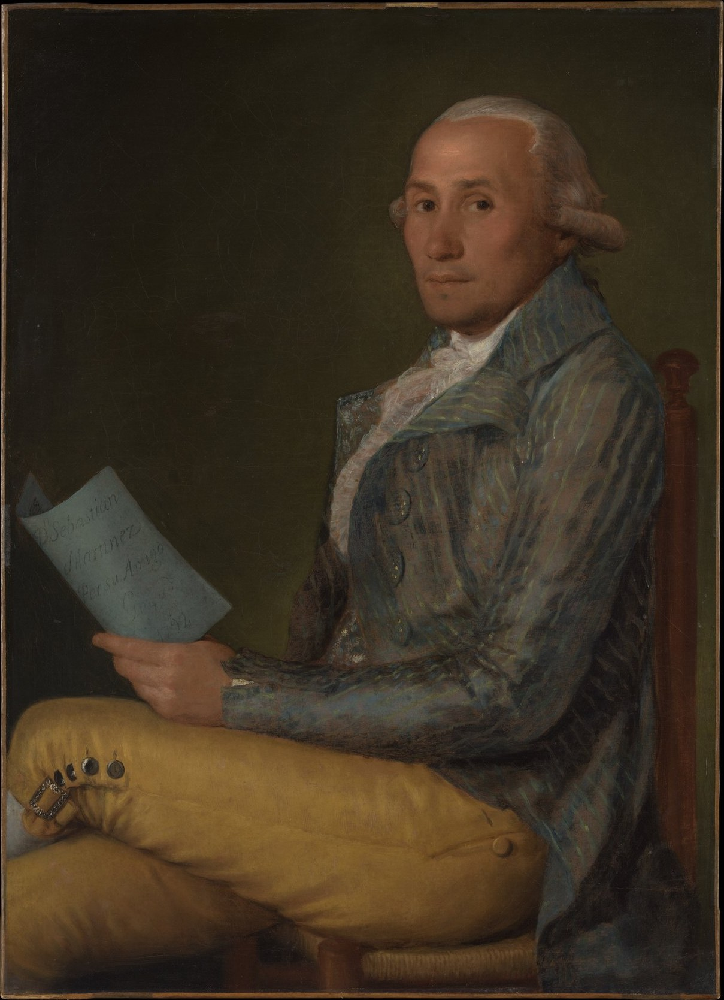
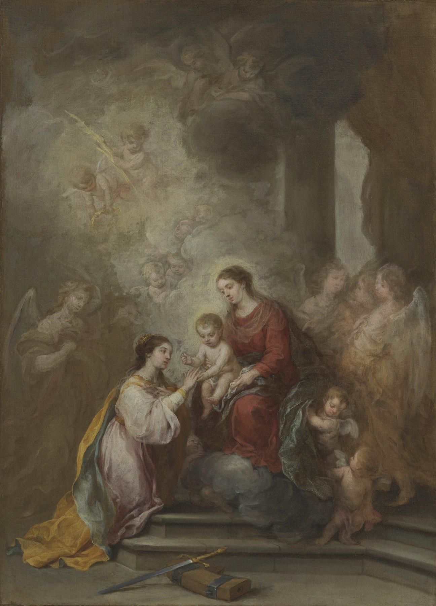
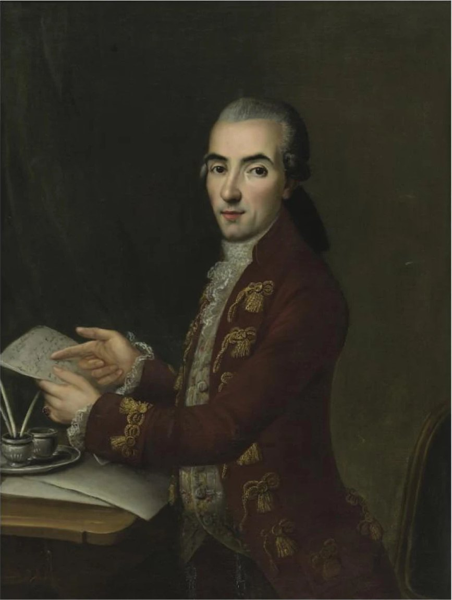

Lesley Crewdson y José Juan Ruiz · Universidad de Cádiz, 18 de noviembre de 2026
Lámina 1

The Metropolitan Museum of Art, Nueva York (06.289)
Open Access del Met, CC0
Ver y descargar en la ficha oficial
https://www.metmuseum.org/art/collection/search/436541
Lámina 2
Hispanic Society of America, Nueva York (donación de A. M. Huntington, 1932)
Por confirmar condiciones de la Hispanic Society
Ver y descargar en la ficha oficial
https://hispanicsociety.emuseum.com/objects/963/portrait-of-an-ecclesiastic
Lámina 3

Los Angeles County Museum of Art (M.83.168), donación de The Ahmanson Foundation; 71,1 × 52,1 cm
Dominio público, descarga libre de LACMA
Ver y descargar en la ficha oficial
https://collections.lacma.org/object/45745
Lámina 4

Colección particular. Sotheby's Nueva York, Arcade Fine Arts, 2004, lote 53; 98 × 72,8 cm
Obra en dominio público; foto de catálogo de Sotheby's
Ver y descargar en la ficha oficial
https://www.sothebys.com/en/auctions/ecatalogue/2004/arcade-fine-arts-old-master-to-contemporary-n01743/lot.53.html
Lámina 5
Fundación Focus, Sevilla
Pedir autorización a Focus (Cesión de imágenes; focus@fundacionfocus.com)
Ver y descargar en la ficha oficial
https://fundacionfocus.es/centro-velazquez-ant/santa-rufina/
Lámina 6
Musée du Louvre, París (RF 1132), comprado en la venta Kums, Amberes, 1898; 103 × 84,5 cm
Condiciones generales de uso del Louvre (descarga tras aceptarlas)
Ver y descargar en la ficha oficial
https://collections.louvre.fr/ark:/53355/cl010064756
Lámina 7
Templum Fine Art Auctions, Madrid, subasta 297, lote 680 («Escuela italiana»); hoy en venta en 1stDibs
Foto de la casa de subastas
Ver y descargar en la ficha oficial
https://templumauctions.com/auction/297-gran-subasta-de-es/lot-680-escuela-italiana/
Lámina 8
Georgetown University Art Collection, Washington (comprado a Martha Meade, 1860)
Condiciones de Georgetown University Library
Ver y descargar en la ficha oficial
https://library.georgetown.edu/special-collections/art/guac/Giordano
Lámina 9
Kingston Lacy, The Bankes Collection, National Trust (NT 1257133)
© National Trust Images
Ver y descargar en la ficha oficial
https://www.nationaltrustcollections.org.uk/object/1257133
Las imágenes se reproducen solo cuando la institución titular las ofrece en dominio público o con autorización; en los demás casos se remite a su ficha oficial. Actualizado: 24-10-2026.